Install TT tv on Fire TV
Use a Fire TV Stick or Cube running Android-based Fire OS with app sideloading available. Check the software version under Settings › My Fire TV › About. Vega OS devices, including Fire TV Stick 4K Select, use a different app format. Amazon device guidance
Reveal Developer Options
From Fire TV Home, open the settings gear, then My Fire TV › About. Highlight your device name and press the centre Select button seven times. Press Back once. You should see Developer Options. If it already appears, continue to the next step. Amazon Fire TV instructions
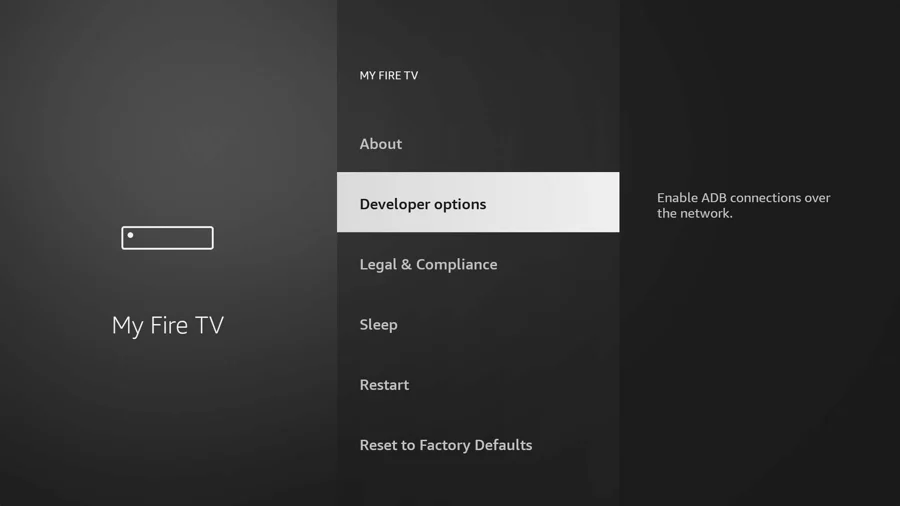
Look for Developer Options below About. Get Downloader
Press Home, choose Find › Search and enter Downloader. Select the orange app by AFTVnews, then choose Get or Download. Wait until the button changes to Open. Downloader product support
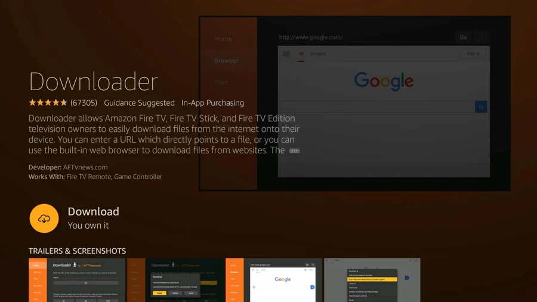
Select Downloader by AFTVnews. Allow Downloader to install apps
Return to Settings › My Fire TV › Developer Options › Install Unknown Apps. Select Downloader and set it to On. Older Fire OS versions show a single Apps from Unknown Sources switch. ADB debugging can stay off. Fire OS permission guide
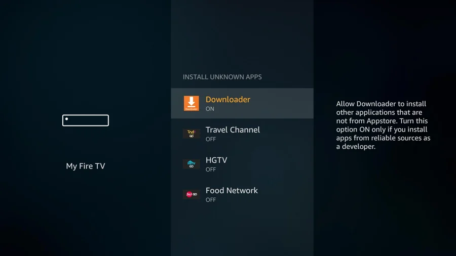
Enable the installation permission for Downloader. Enter the TT tv code
Open Downloader and select Home in its sidebar. In the address or short-code field, enter 6952735 and submit it with Go or the on-screen keyboard?s enter key. Wait for the AFTVnews redirect and the APK download. The clean release is hosted in the tturner03274/tt-tv-downloads GitHub repository. Check the code destination · Direct APK download
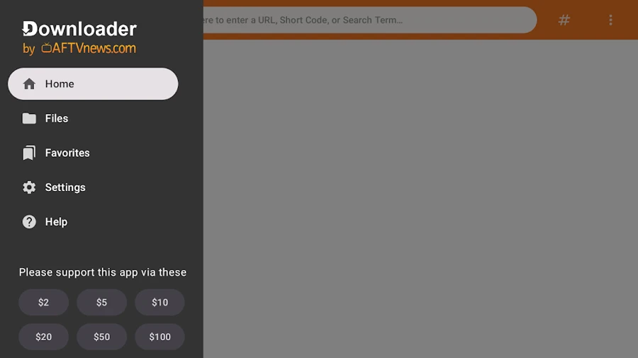
Use the Home address field for the seven-digit code. Install and open TT tv
When the Fire OS installer opens, check the app name is TT tv, choose Install, then Open. If you picked Done, find TT tv in Your Apps & Channels. You can now return to Developer Options and turn Downloader's install permission off. Illustrated Fire TV installation guide
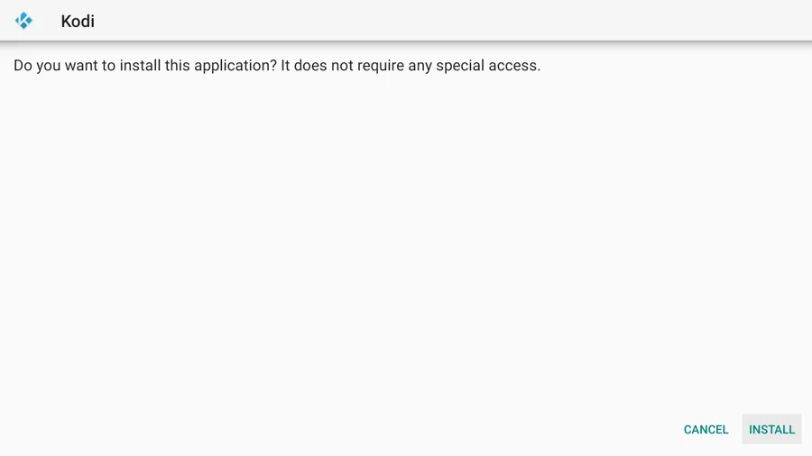
Example installer from AFTVnews. Your prompt should name TT tv.
Fire TV and Downloader images from AFTVnews. The Downloader Home screenshot comes from its official app listing. Menu appearance varies by version.
Explore TT tv
Pick a page to see the remote steps. Select a screenshot for the full-size view. The channels and titles you see depend on your provider.
Home and your remote
Home brings your live channel and unfinished titles together.
- Move Left or Right along the top tabs. Press Down to enter the rows of cards.
- Move across a row to see the description change. Press the centre Select button to open the highlighted card.
- Use Back to move out of a row. On a title or channel tile, hold Select for the available options.
TV Guide and live channels
Choose a channel by what is on now or coming up.
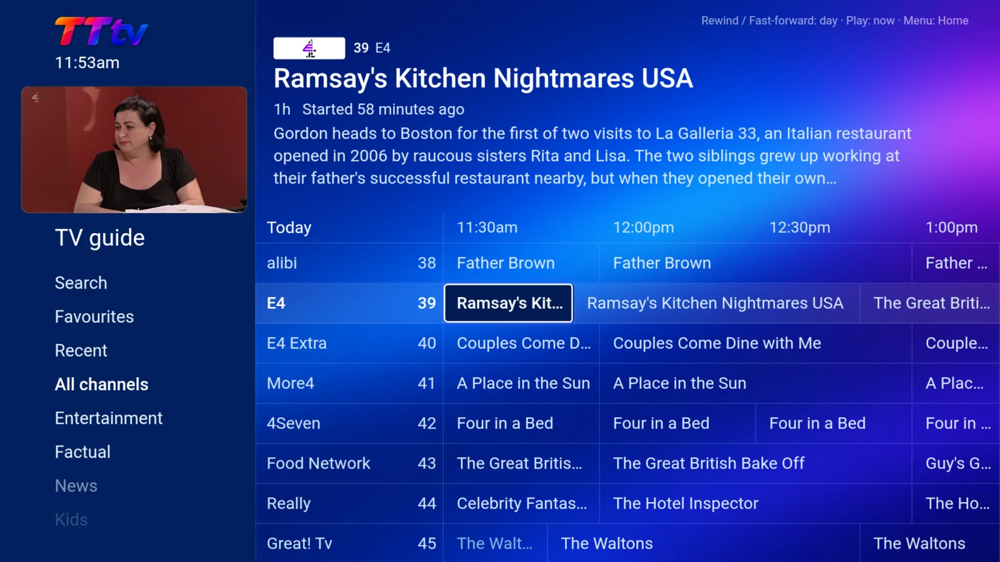
- Open TV Guide and select the TV guide tile for the full schedule. Select a category tile to start with fewer channels.
- Move Up or Down between channels and Left or Right through the schedule. Select a current programme to tune in.
- Hold Select on a listing for programme information. On a future listing choose Remind me for an in-app reminder.
While a channel is playing
Keep a channel handy or check what follows it.
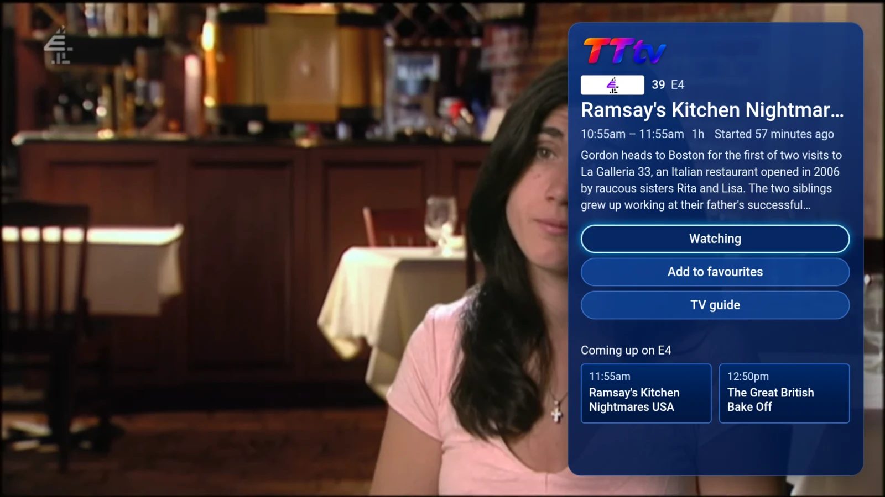
- Press Select for the mini guide. Press Up or Down during full-screen viewing to change channel.
- Hold Select during viewing for programme information. Choose Add to favourites to put the channel on the Favourites row.
- Press Back from full-screen playback for the guide. Press Back again to reach Home.
Movies and the provider catalogue
Browse your TV service’s films, including its original categories.
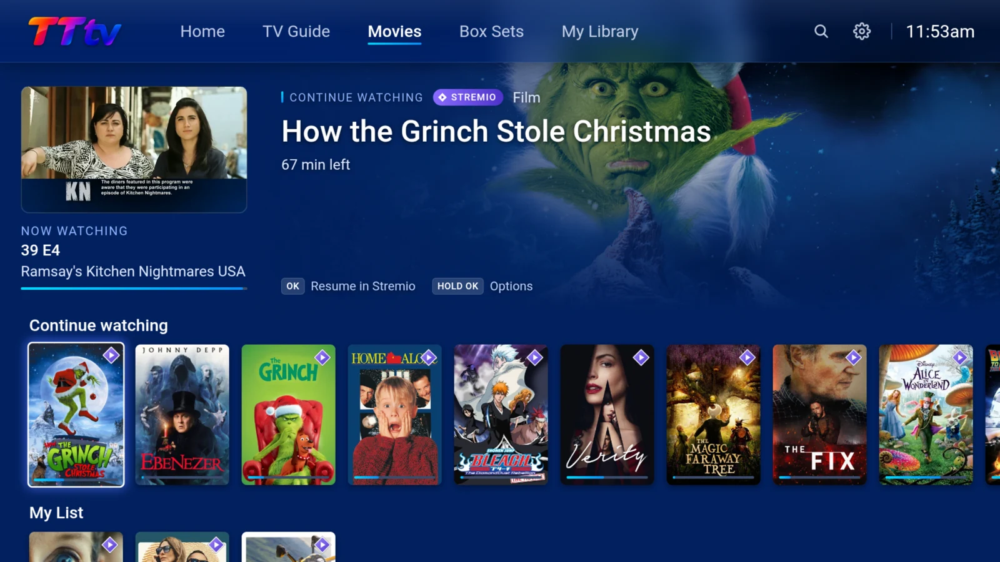
- Open Movies, move down to Browse all and select it. This opens the film catalogue supplied by your provider.
- Choose a category. English new releases appear first where the provider supplies them. Move into the posters, or use the sort and search controls to narrow the list.
- Select a film for details. Choose Play to watch or My List to save it. Previously started films appear in Continue watching.
Box Sets, seasons and episodes
Pick the exact episode you want to watch.
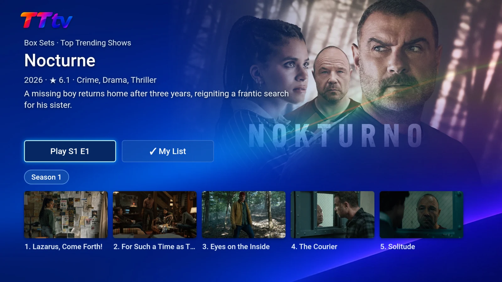
- Open Box Sets, then Browse all. Choose a provider category and select a series poster.
- In the series detail screen, choose a season if more than one is available. Move along the episode row and select an episode to play it.
- Use the main play or resume button to continue. My List keeps the series in your library.
My Library and Continue watching
Return to a film, series or recently watched channel.
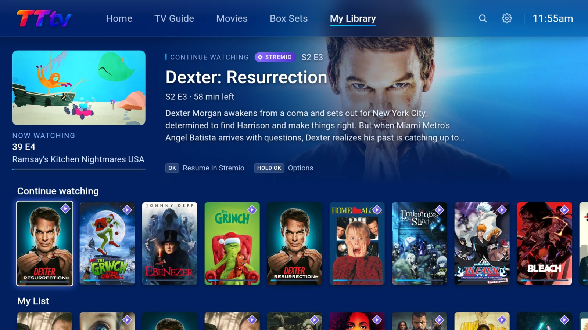
- Open My Library. Pick a title from Continue watching to resume, or browse saved titles under My List.
- Select a recently watched channel to return to live television. Rows appear as you start watching or saving things.
- Hold Select on a title to see its options. Use Remove from Continue watching when you want to clear its place.
Search and Settings
Find a title or make the interface easier to read.
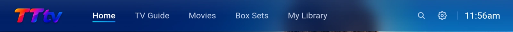
- Move along the top bar to the magnifying glass. Enter a channel, film or series name, then select a result. With Stremio linked, results may also include Stremio titles.
- Open the gear and choose Accessibility to adjust text size, contrast, motion and subtitle appearance. Voice guidance appears on supported devices.
- Choose Refresh channels to fetch a fresh channel list and guide. Smooth play can add a reserve for live channels that keep stopping. Frame-rate matching and picture-in-picture appear on supported hardware.
Your Football
Find matches for the teams you follow.
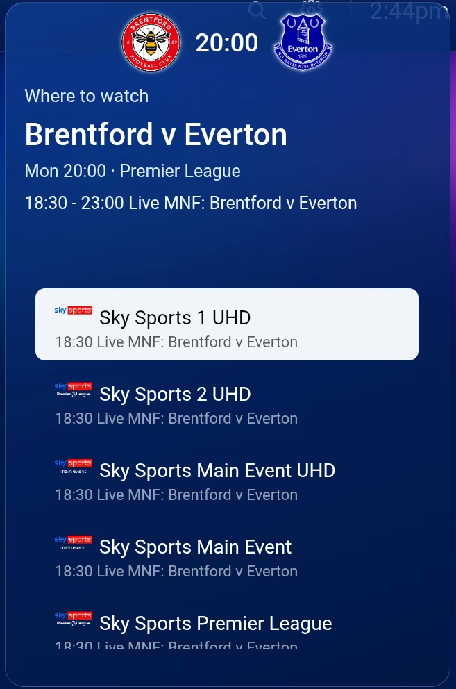
- Open Settings → Football → Follow a team. Choose a Premier League team or England, or open Championship or League One for their clubs.
- Use Competitions to select which competitions to include, and switch on Kick-off reminders if you want them.
- Return to Home → Your Football and select a fixture. The card lists channels with matching guide listings. When a match is on, select an available channel to watch. A fixture can appear before the guide has a broadcast listing.
Connect Stremio
Bring your Stremio library and viewing progress into TT tv. Choose a film or episode in TT tv and open it in the separate Stremio player. Your provider login continues to handle live TV and your provider’s on-demand catalogue.
Install Stremio on your Fire TV
In Downloader, open the official Stremio downloads page. Choose TV → Android TV → Latest. Under Manual install, select the ARM APK for your device’s Android architecture. Choose Install, then Open and sign in to Stremio. Stremio downloads
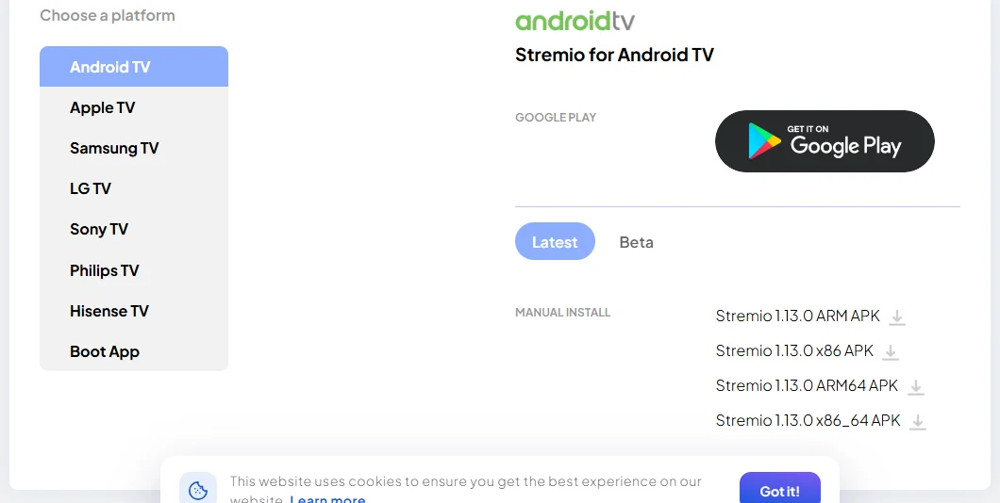
Use the Android TV version for navigation with the Fire TV remote. Link your Stremio library to TT tv
Reopen TT tv. Go to My Library → Sign in to Stremio, or open Settings → Stremio account. On your phone, scan the QR code or visit the link page. Sign in with the same Stremio account you used on the TV and enter the four-character code from TT tv. If it expires, press OK on the TV for a fresh code. Stremio account linking
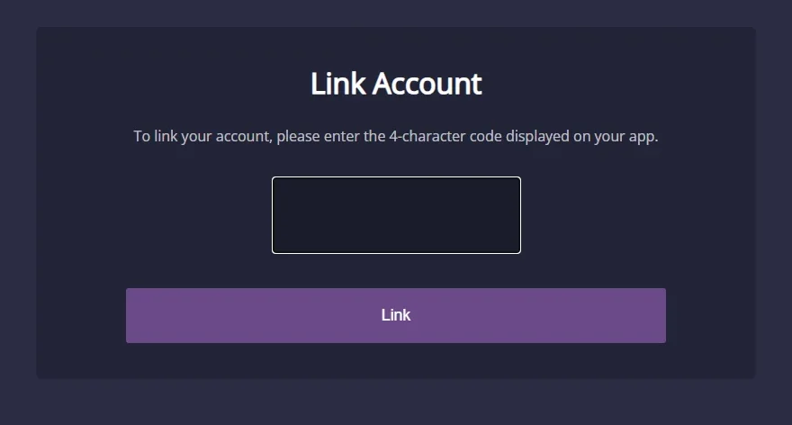
Enter the temporary account-linking code displayed by TT tv. Open a title and pick up where you left off
In TT tv, open Movies or Box Sets, select a Stremio title and choose Watch on Stremio. For a series, select the episode first. Choose an available source inside Stremio. Back in TT tv, open My Library for Continue watching and My List. Choose Stremio account → Sync now if a recent change has yet to appear.
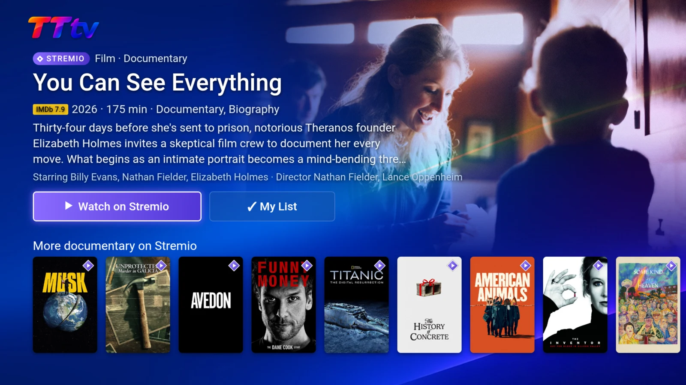
Choose Watch on Stremio on the TT tv title screen. 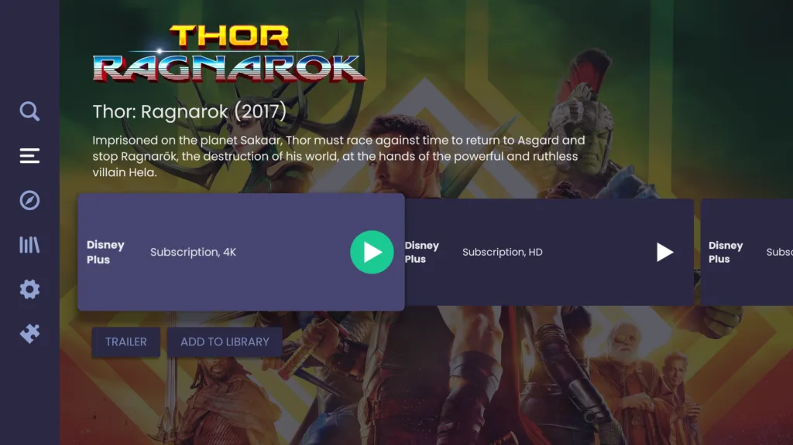
Playback options open in Stremio. The services shown depend on your title and add-ons. Stremio’s example TV screen
Torrentio and Real-Debrid
These are independent third-party services. Torrentio is a community add-on that finds torrent sources for a title. Real-Debrid is an optional paid service that can retrieve a supported file and provide a playback link. Stremio shows the available results and handles playback. TT tv’s live TV, guide and provider library work independently of both. Use sources you have permission to access.
Choose your add-on settings
On a computer with Stremio installed and signed in, open Torrentio’s configuration page. Choose your preferred language and resolutions. To use Real-Debrid, select RealDebrid under Debrid Provider. Torrentio configuration
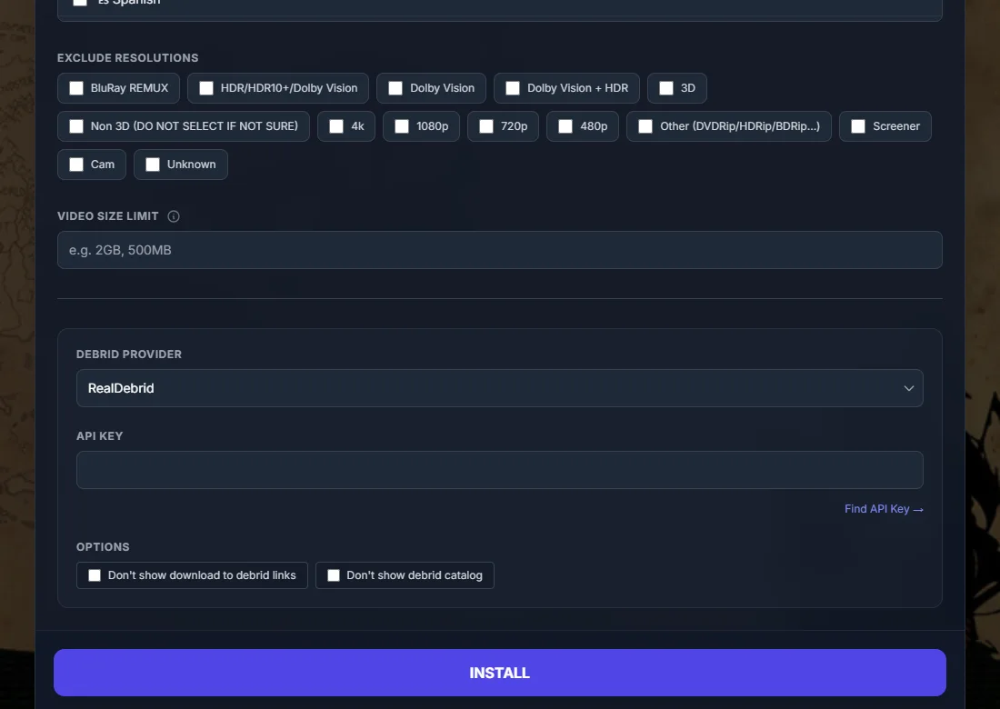
Real-Debrid is optional. Leaving the provider unset uses Torrentio’s direct torrent mode, which can use peer-to-peer traffic. Connect your own Real-Debrid account
If you selected RealDebrid, sign in to your Real-Debrid account and follow Find API Key in the configurator. Enter your private key only if you trust the add-on with account access. Keep both the key and the generated installation link private. Real-Debrid account token · Real-Debrid support
Install in Stremio and check the TV
Select Install on the configurator. When Stremio opens, confirm Install and check the add-on under your installed add-ons. Reopen Stremio on the TV with that same account and try a title you have permission to watch. If it shows no sources, check the add-on in Stremio and your Real-Debrid account status. Stremio add-on installation guide
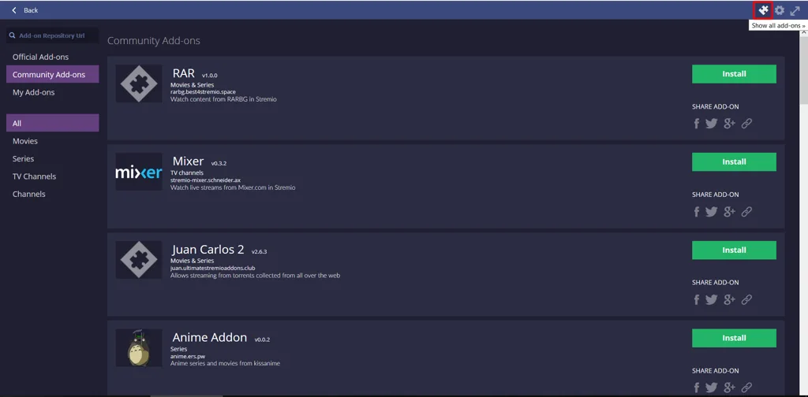
The desktop add-on manager. Installed add-ons sync across devices signed in to the same Stremio account.